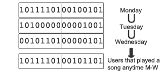

整合性？リレーション？
分散性？可用性？永続性？
機能性？アドホック？
スループット？レイテンシ？
整合性？リレーション？
分散性？可用性？永続性？
機能性？アドホック？
スループット？レイテンシ？
- 35000tps(read/write/update)
- 0.05ms!!!
ちなみに(単体サーバでの)簡単な比較(だいたい)
mysql
- ~3000tps
- ~2ms
- ~10000tps
- ~2ms
cassandraとかcouchbaseとかは他の人に聞いてみて下さい．
その気になったら負荷検証スクリプト上げときます．
range queryとaggregationなども比較してます． riak, couchbaseとか．redshiftとかdynamodbとか．
(YCSBとか重くね？)
整合性？リレーション？
分散性？可用性？永続性？
機能性？アドホック？
スループット？レイテンシ？
整合性？リレーション？
分散性？可用性？永続性？
機能性？アドホック？
スループット？レイテンシ？
参考: the little redis book
https://github.com/craftgear/the-little-redis-book/blob/master/ja/redis.md
documents: commands
str(bitmap)
hash
list
set
sorted set
str(bitmap) : set, get, strlen, getrange, append, incr, incrby, setbit, getbit
hash : hset, hget, hmset, hmget, hgetall, hkeys, hdel
list : lpush, ltrim
set: sadd, sismember, sinter, sinterstore
sorted set: zadd, zcount, zrevrank
単にまとめてリクエスト送る機能． ネットワーク負荷軽減
(パイプラインじゃなくね？？)
redis.pipelined do
100.times do
redis.incr('powerlevel')
end
end
かなりおもろいね！
整合性？リレーション？
分散性？可用性？永続性？
機能性？アドホック？
スループット？レイテンシ？
整合性？リレーション？
分散性？可用性？永続性？
機能性？アドホック？
スループット？レイテンシ？
x リレーション
o トランザクション
multi, exec, discard
multi
hincrby groups:1percent balance -9000000000
hincrby groups:99percent balance 9000000000
exec
o CAS(楽観ロック)
watch
All the commands in a transaction are serialized and executed sequentially
a Redis transaction is also atomic
However if the Redis server crashes or is killed by the system administrator in some hard way it is possible that only a partial number of operations are registered.
Using the redis-check-aof tool it is possible to fix the append only file that will remove the partial transaction so that the server can start again
atomic性保つよ．crash時には復帰時にどうにかするよ．
warning!!: エラー時の挙動
シンタックスエラーは先に検知するが、型による操作の間違いはそのまま通る．
even when a command fails, all the other commands in the queue are processed
warning!!: エラー時の挙動
MULTI
SET a 3
LPOP a
EXEC
+ OK
- ERR Operation against a key holding the wrong kind of value
a kind of error that is very likely to be detected during development, and not in production
simplified and faster
If at least one watched key is modified before the EXEC command, the whole transaction aborts
watch zset
element = zrange zset 0 0
multi
zrem zset element
exec
まぁまぁだよね．型エラーには気をつけて．
ってか、整合性ってけっきょく永続性とか分断耐性とかと組みだよね！
整合性？リレーション？
分散性？可用性？永続性？
機能性？アドホック？
スループット？レイテンシ？
整合性？リレーション？
分散性？可用性？永続性？
機能性？アドホック？
スループット？レイテンシ？
pros:
RDB files are perfect for backups
very good for disaster recovery, being a single compact file can be transfered to far data centers
maximizes Redis performances
faster restarts
cons:
data loss!
fork() cost
pros:
durable
different fsync policies: no fsync at all, fsync every second(default), fsync at every query
rewrite the AOF in background when it gets too bigcons:
bigger
slower
fsync is performed using a background thread and the main thread will try hard to perform writes when no fsync is in progress.
fsync every time a new command is appended to the AOF. Very very slow, very safe
Replications can be used both for scalability, in order to have multiple slaves for read-only queries
failoverはredis sentinel
メモリ、cpu, スループット限界な時．
proxy: redis cluster, Twemproxy
client: http://redis.io/clients
warning!
Redis Cluster is currently not production ready
(consistent hashing)
redis sentinel monitoring, notification, automatic failover
また今度で．．
基本そこは目をつぶるよね．
http://blog.getspool.com/2011/11/29/fast-easy-realtime-metrics-using-redis-bitmaps/
http://moot.it/blog/technology/redis-as-primary-datastore-wtf.html
redis.setbit(play:yyyy-mm-dd, user_id, 1)

population countはcpuの命令セットに含まれてるから速いよ（全てではない）
http://en.wikipedia.org/wiki/Hamming_weight
Daily: 50.2ms
Weekly: 392.0ms
Monthly: 1624.8ms
http://stackoverflow.com/questions/9829578/fast-way-of-counting-bits-in-python
単純なアプリケーション側シャーディングでデータサイズはカバー
自前のmaster(write)/slave(read)/persistence(backup to S3)のroleを定義
failoverはなし(sentinelまだ出てなかった)
16 core machine will only use one core with Redis
pub/sub けっこー面白いけど．．
redis sentinel monitoring, notification, automatic failover
redis cluster
mass insertion
security
signals/crash
scripting